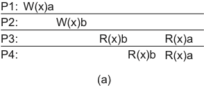
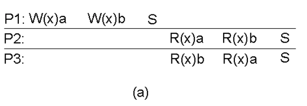
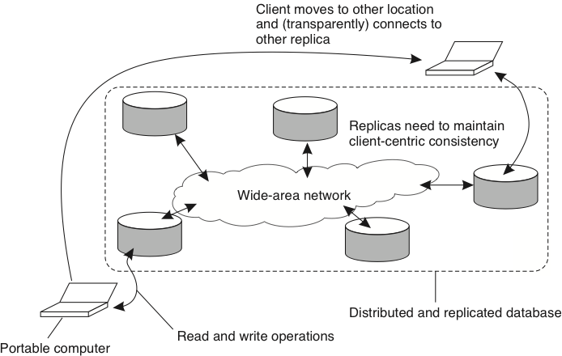

Bancos de Dados Distribuídos
Bancos de Dados
Falar em bancos de dados distribuídos implica falar em bancos transacionais e P2P.
Operações Atômicas
Falar em bancos de dados distribuídos implica falar em bancos Relacionais/Transactionais e P2P.
Falar em bancos transacionais, implica falar ACID!
- Atomicidade -- Todas as operações ou nenhuma.
- Consistência -- Os dados transitam de estado válido para estado válido.
- Isolamento -- Transações não interferem umas nas outras.
- Durabilidade -- Efeitos não são esquecidos.
No modelo de Máquinas de Estados Replicadas, operações são enviadas para as réplicas, que as executam em ordem, deterministicamente e também atomicamente. Isto é, cada operação é ou executada independentemente das outras e por completo, ou não é executada.
Conjuntos de Operações
Mesmo com Operações Atômicas, frequentemente queremos/precisamos agrupar operações tal que
- todas ou nenhuma sejam executadas
- mesmo na presença de falhas.
Atomicidade
Memória Estável
Para que os efeitos de operações não sejam esquecidos, eles precisam ser armazenados em memória estável como
- HD -- Hard Drives
- SSD -- Solid State Drives
- NVRAM -- Non Volatile RAM
Durabilidade
O Banco
Conta C
1 2 | |
Transação
Mova 10% do saldo de B, de A para B.
1 2 3 4 5 | |
Transação
Qual o saldo total das contas?
1 2 3 4 | |
Execução Concorrente
Execução concorrente de T1 e T2?
1 2 3 4 5 6 7 8 | |
Dados não finais "vazaram". Dirty Read.
Falta Isolamento.
Pode levar a mais que um resultado errado. Pode deixar o BD em estado inválido.
Execução Concorrente
Mova 10% do saldo de B, de A para B.
1 2 3 4 5 6 7 8 9 | |
sB*0.1 foi perdido. Lost Update
Perdeu Consistência
Solução?!
Para garantir Isolamento
- Execuções dos conjuntos não podem se sobrepor.
- Execute um conjunto de operações por vez, serialmente!
- Garantirá também Consistência
Que tal?
Limite a concorrência de transações.
Equivalência Serial
Concorrência
Além de ACID, queremos o máximo de concorrência para garantir o melhor desempenho.
Queremos uma execução das transações semelhante à serial, mas com o desempenho de concorrente.
Não queremos uma execução serial, mas uma Equivalência Serial, isto é, que os efeitos das transações, executadas concorrentemente, sejam equivalentes aos de alguma execução serial destas transações.
Equivalência Serial
Preocupe-se com Operações Conflitantes
- Transações diferentes
- Uma é escrita
- Mesmo dado
Duas execuções (de transações) são equivalentes se
- as transações tem as mesmas operações
- quaisquer duas operações conflitantes são executadas na mesma ordem nas duas execuções
Uma execução tem Equivalência Serial se é equivalente a alguma execução serial das transações.
Escalone operações concorrentemente, de forma a obter o melhor desempenho, mas de forma a manter Equivalência Serial.
Esta definição difícil de ser testada. Algo mais simples?
- Como demonstrar Equivalência Serial?
- Tenho que testar todas as execuções seriais e ver se uma casa com o que planejo fazer?
- É caro fazer este planejamento. É mais eficiente garantir por construção.
Simplificação: A execução de duas transações tem Equivalência Serial se todos os pares de operações conflitantes entre as transações são executados na mesma ordem.
Lost Update
Mova 10% do saldo de X, de Y para X.
1 2 3 4 5 6 7 | |
Conflitos: 1x3:\(\rightarrow\), 2x4:\(\leftarrow\), 3x4:\(\leftarrow\)
Consistência -- s*0.1 foi perdido
Mova 10% do saldo de X, de Y para X.
1 2 3 4 5 6 7 | |
Conflitos: 1x3:\(\leftarrow\), 2x4:\(\leftarrow\), 3x4:\(\leftarrow\)
Dirty Read
Saldo total?
1 2 3 4 5 6 7 8 9 | |
Exceto se
1 | |
Aborto em Cascata
T1 faz uma escrita. T2 lê o que T1 escreveu e faz outra escrita. T3 lê o que T2 escreveu e faz outra escrita. T4 lê o que... T1 aborta.
Dirty Read
Como lidar?
- Suspenda a transação quando esta fizer dirty read.
- Se transação foi abortada, todas as suspensas (que leram dela) devem ser abortadas.
- Repita passo anterior.
E se evitarmos dirty reads em vez de tratarmos?
- Suspenda antes de fazer dirty read.
- Quando transação for terminada, continue execução.
Abordagem leva a menor concorrência.
Para nos permitir identificar transações, vamos usar o seguinte framework para operá-las.
Transações
beginTransaction()- operações
commitTransaction(): Ok/NOkabortTransaction()
Escrita Prematura
1 2 3 4 5 6 | |
A transação da direita não le, apenas escreve. O resultado? O saldo volta para 100.
Strict Execution
- Leituras e Escritas devem ser atrasadas até que todas as transações anteriores que contenham escritas sejam commitadas ou abortadas.
- Execução estrita garante Isolamento.
- Como implementar eficientemente?
Controle de Concorrência
Como
- locks (pessimista): simples, mas problemático
- multi-versão (otimista): custo se há muitos conflitos
- timestamp: time é algo complicado
Locks
Tranque todos os objetos para que outras transações não consigam ler ou escrevê-los. Destranque quando não mais necessários.
Sofre de dirty reads e escritas prematuras.
Strict Two Phase Locking
- tranque quando necessário
- destranque ao final da transação
- termine a transação
Como aumentar a concorrência?
Read-Write Locks
- dois níveis de acesso
- múltiplos leitores
- único escritor
- reads por ser transformados em locks
- writes não podem se transformados em reads (violaria Strict Two-Phase Locking)
Lock -- por que evitar?
- pessimista
- overhead mesmo se não há conflitos
- ou restritivo ou risco de deadlock
- lock liberado somente no final, para evitar dirty reads/escrita prematura.
Abordagem mais otimista?
- modifique uma cópia privada dos dados
- na hora de terminar a transação, verifique se nenhuma transação modificou o dado, isto é, se a cópia privada ainda é válida
- substitua a cópia pública pela privada
Esta técnica é conhecida como deferred update, pois o update dos dados só ocorre no final, se a validação passar.
Abordagem otimista
- baixo overhead, se não houver conflitos
- validação é rápida
- update é simples
Se houver muitos conflitos, o trabalho da transação é todo desperdiçado.
Validação
read e write sets de quaisquer transações concorrentes deve ser disjuntos.
- t1 não deve ler dados escritos por t2
- t2 não deve ler dados escritos por t1
- t1/t2 não deve escrever dados escritos por t2/t1

Backward validation
- t1: transação sendo validada
- t2: transação já comitada.
- t1 não deve ler dados escritos por t2
Em caso de não validação, aborte t1

Forward validation
- t1: transação sendo validada
- t2: transação ainda em execução
- t2 não deve ler dados escritos por t1
Em caso de não validação, aborte t1, possivelmente nunca terminando uma transação.
ou aborte t2.

Timestamping
- transação recebe um timestamp no início
- operações são validadas na execução
- leia somente se nenhuma transação com maior timestamp tiver escrito e comitado
- escreva somente se nenhuma transação com maior timestamp tiver lido e comitado
- transações "executam na ordem do timestamp"
Como implementar?
Como implementar
- objetos tem valores tentativos, não comitados
- objetos tem versões em que foram escritos
- em que foram comitados
- e em que foram lidos
- consistência é testado na execução da operação
Como implementar -- escrita
- escritas tem sucesso somente se versão sendo escrita é maior que versões lidas
- se versão sendo escrita é menor que versão já escrita, ignore e continue
como implementar -- leitura
- leitura com versão v tem sucesso se maior versão é comitada e menor que v ou alguma não comitada
- leitura com versão v é suspensa se maior versão é não comitada e menor que v

- leitura com versão v é abortada se maior versão comitada é maior que v

Referências
Inspirado nas notas de aula de johan montelius e vladimir vlassov, da disciplina id2201 distributed systems, kth royal institute of technology. imagens copiadas descaradamente de seus slides.
Também aqui, https://www.cs.ucy.ac.cy/~dzeina/courses/epl446/lectures/16.pdf
Bancos de dados distribuídos
bancos de dados transacionais distribuídos
Agora que relembramos como transações funcionam e temos uma noção de como podem ser implementadas em um sistema centralizado, vamos tentar entender como fazê-lo em um sistema distribuído.
- múltiplos servidores
- transações em cada servidor
- transações distribuídas
- como obter equivalência serial em transações distribuídas
Transação distribuída
begintransaction(): tid(transaction id)operation(tid,op)endtransaction(tid): ok/nokaborttransaction(tid)
Papéis
- cliente
- servidor: resource managers
- servidor: transaction monitor/manager

Localmente, cada bd funciona como um sistema centralizado normal, usando abordagens otimistas ou pessimista para garantir consistência.
O grande problema no bd distribuído é garantir o acordo na terminação.
Comprometimento distribuído
atomicidade
O problema...
- transação \(t\) acessa recursos nos resource managers (rm)
- terminar com sucessos \(t\) em todos os rm -- commit -- ou
- abortar \(t\) em todos os rm
- ainda que enlaces de comunicação, nós e rm falhem, antes ou durante a terminação da transação.
2PC - 2 Phase Commit
- participante -- resource manager "tocados" pela transação
- coordenador -- transaction manager
Premissas
- Cliente decide quando iniciar o commit.
- Cada participante faz commit ou abort da transação local.
pode retornar ok ou nok. - Coordenador não começa a commit até que a \(t\) tenha terminado em todos os participantes e cliente tenha solicitado.
- Participantes falham por parada.
1PC
- cliente envia
endtransaction(tid)para o coordenador - coordenador envia mensagem para participantes "comitarem"
- e se um participante retornar nok? % enquanto outros retornam ok?
- e se um participante não responder?
2PC
- cliente envia
endtransaction(tid)para o coordenador - coordenador envia mensagem para participantes se prepararem para terminar
- coordenador espera que todos se preparem ou digam se não podem
- coordenador envia ordem de terminação
Comprometimento
- um participante \(p\) está pronto para commit se tiver todos os valores modificados por \(t\) em memória estável e nenhuma razão para abortar a transação (outras transações conflituosas fizeram commit?)
- o coordenador não pode começar a terminação até que todos os participantes estejam prontos.
- se algum participante aborta, o coordenador deve abortar.
Problema de acordo, mas não igual ao consenso.
2PC -- o protocolo
-
fase 1
- a: coordenador envia vote-request para participantes.
- b: participante responde com vote-commit ou vote-abort para o coordenador; se vote-abort, aborta localmente.
-
fase 2
- a: coordenador coleta votos de todos os processos; se forem todos vote-commit, envia global-commit para os participantes e ok para o cliente
- b: participantes esperam por global-commit ou global-abort
| Coordenador | Participante |
|---|---|
 |
Falha no Participante
Participante falha no estado \(S\) e, ao se recuperar, identifica tal fato ao reprocessar o log de operações em memória durável.
Se está no estado
- INIT: nem sabia que a terminação começou. Aborta unilateralmente, pois ou já abortaram ou vão abortar.
- ABORT: havia votado abort ou recebido global-abort -- continua protocolo.
- COMMIT: estava pronto para terminar a transação com sucesso -- continua protocolo.
- READY: estava esperando por commit ou abort. Precisa saber se coordenador enviou global-commit ou global-abort -- consulta coordenador.
2PC
Por que é difícil?
- E se \(R_i\) falhar depois de ter se preparado?
- E se \(R_i\) falhar mas \(R_j\) continuar funcionando?
- E se todos estiverem desligados quando \(R_i\) se recuperar?
- E se \(R_i\) estiver lento e parecer que a transação falhou?
Falha no Participante
- READY: esperando por commit ou abort. Precisa saber se coordenador enviou global-commit our global-abort -- consulta coordenador.
E se coordenador não estiver presente?
Assumindo que participantes se conhecem, contate participante \(Q\)
- Se \(Q\) em COMMIT , vai para COMMIT
- Se \(Q\) em ABORT , vai para ABORT
- Se \(Q\) em INIT , ordena que Q aborte e, se confirmado, veja passo anterior
- Se \(Q\) em READY , consulta outro participante.
Se todos os participantes em READY? Possivelmente o coordenador já respondeu ao cliente.
Precisa esperar pelo coordenador.
Falha no Coordenador
O problema principal é: e se ninguém ouviu a decisão final do coordenador?
Neste caso, o protocolo não pode continuar, enquanto o coordenador não retornar, pois se os RM abortarem, podem estar contradizendo algo dito ao cliente, por exemplo, "Sim, ATM, pode entregar o dinheiro", ou executando um comando que o cliente vê como anulado, como "Reenvie o pedido de mais 27 carros à fábrica."
Recuperação do Coordenador
Ao se recuperar, o coordenador:
- sabe se começou a terminação de alguma transação
- sabe se já enviou alguma resposta final para as transações inacabadas
- sabe se já recebeu a confirmação de todos os participantes (se transação não estiver em aberto)
- reenvia a última mensagem das transações em aberto.
Otimizações
-
Participantes "somente-leitura"
- Não se importa com a decisão; termina após fase 1.
- Responde com vote-commit-ro
-
Abort presumido
- Se ocorrer timeout, coordenador envia global-abort a todos e esquece transação
- Se questionado, responde com global-abort.
-
Transferência de coordenação
- se houver somente um participante...
- vote-request-transfer
- participante responde com global-commit/global-abort
Coleta de Lixo
Mesmo quando somente um participante falha...
Após receber decisão, o participante pode concluir e esquecer a transação.
Mas e se o participante falho precisar se recuperar e todos os outros envolvidos tiverem esquecido a transação?
Coleta de lixo só pode ser feita quando todos tiverem confirmado a execução da transação e, por isso, Fase 2b é necessária.
3-PC
Estende o protocolo para permitir contornar falha do coordenador.
O Protocolo
- Fase 1a -- Coordenador envia vote-request para participantes.
- Fase 1b -- Participante responde com vote-commit ou vote-abort para o coordenador; se vote-abort, aborta localmente.
- Fase 2a -- Coordenador coleta votos de todos os processos; se forem todos vote-commit, envia prepare-commit para os participantes; se não, global-abort e para.
- Fase 2b -- Participantes esperam por prepare-commit ou global-abort; se o primeiro, respondem com ready-commit; se o segundo, param.
- Fase 3a -- coordenador espera por ready-commit de todos e então envia global-commit.
- Fase 3b -- participantes esperam por global-commit.
| Coordenador | Participante |
|---|---|
 |
 |
Falha no Participante
\(P\) consegue saber o que fazer após se recuperar da falha no estado READY ou PRE-COMMIT
- Participantes e coordenador não distam mais que um estado.
- Se alguém em READY, o coordenador não mandou global-commit ainda; Aborte.
- Se todos em PRE-COMMIT, é possível comitar, comite.
- A execução dos passos anteriores tem que anular o poder do coordenador.
Se todos os participantes em READY?
3PC x 2PC
- 3PC -- Aumenta disponibilidade
- 2PC -- Falha do coordenador é "corner case"
- 3PC -- Aumenta o custo do "caminho feliz" e por isso não é usado na prática
- Nenhum escala e não usá-los é uma das razões para o surgimento dos sistemas NoSQL
Paxos-Commit
Usa instâncias de Consenso Distribuído para votar. Se o consenso é tolerante a falhas e consistente, todos vêem o mesmo resultado na transação.
O protocolo
- Para terminar a transação \(T\), o coordenador envia request-commit a todos os participantes.
- Um participante \(P\) propõe seu voto na instância \(T_P\) de consenso.
-
Todo participante \(P\) espera pelas decisões das instâncias de consenso \(T_i\) para todos os participantes \(i\), inclusive si mesmo; se todas as decisões forem commit, o participante comita a transação.
-
Se cansar de esperar por \(T_Q\), o participante propõe abort em \(T_Q\).
Falha no Participante
- Se o participante falha antes de votar, então alguém votará abort por ele.
- Se o participante \(P\) falha, ou é suspeito de, então é possível que dois votos diferentes tenham sido propostos em \(T_P\); isso não é um problema pois a decisão é a mesma para todos observando a instância.
- Após se recuperar, o participante recupera as decisões de todas as instâncias \(T_i\) e termina apropriadamente.
Log Recuperável
Como garantir que o log poderá ser lido para recuperar o processo?
Disco Duplicado

- Dois discos iguais?
- Dados diferentes, mas ambos bons?
- Um bom outro estragado?
- Ambos estragados?
Estruturas de Dados para SD
Qualquer que seja a escolha de algoritmo para fazer o particionamento dos dados entre servidores, sobra ainda a questão de como manipular os dados dentro do servidor. Idealmente, toda operação seria executada a partir da memória principal, tendo assim a menor latência possível. Contudo, para que se tenha também durabilidade das operações executadas, para que os dados manipulados sobrevivam a reinicializações do servidor, intencionais ou não, é preciso armazenar os dados em memória estável, da qual a mais comum são os discos rígidos.
É notório que escritas em disco são muito mais lentas que em memória principal, mas o que exatamente é lento no acesso ao disco? Essencialmente, o posicionamento da cabeca de leitura/escrita na trilha correta do disco, pois esta operação é mecânica. Por esta razão, acessos aleatórios são mais custosos que acessos sequenciais, pois neste o custo de posicionamento é pago apenas uma vez. Por este motivo, muitos bancos de dados, especialmente DHT pois tem seu uso focado em quantidades muito grandes de dados, gerados e acessados com grande velocidade, tentam acessar o disco sempre de forma sequencial. Alguns bancos de dados, como o Cassandra, armazenam os dados na forma de uma Log Structured Merge Tree, ou LSMT.
Log Structured Merge Tree
Uma Log Structured Merge Tree é uma forma de se armazenar dados em disco de forma de forma quase sempre sequencial, minimizando assim os o impacto da durabilidade no desempenho do sistema. Considere um banco armazenando uma pequena quantidade de dados, que cabe em memória principal. Na LSMT, operações de escrita são adicionadas a um commit log, em disco, e somente então são executadas em memória principal e confirmadas para o cliente; a estrutura que armazena os dados em memória é denominada memory table, ou simplesmente memtable. Neste cenário o acesso ao disco na escrita é sequencial, o melhor que se pode ter em um disco, e a recuperação dos dados é feita diretamente da memória, rápida.

No caso de uma reinicialização do processo, a reexecução do commit log restaurará o estado da memtable. Contudo, se o commit log for extenso, reexecutá-lo demandará um tempo significativo. Uma forma de acelerar o processo é fazer snapshots da memtable de forma sincronizada com a escrita no log. Isto é, digamos que todas as operações de escrita, até a décima, estão salvas no commit log e refletidas na memtable. Digamos também que todas as operações são modificações da mesma linha do banco de dados em memória. Se um snapshot é tomado, ele será correspondente ao commit log, isto é, conterá o efeito de exatamente as mesmas 10 operações, mas de forma mais compacta que o log, uma vez que o log conterá dez operações e o snapshot somente uma linha de dados. Após o snapshot ser concluído, o log correspondente pode ser apagado. Novas operações de escrita devem ser armazenadas em um novo log e, no caso de uma reinicialização, primeiro se deve restaurar o snapshot e então o novo log. Para lidar com corrupções de arquivo no sistema, pode ser uma boa ideia manter mais do que o último log e snapshot, já que a recuperação do estado exigiria voltar mais atrás na reexecução de operações.
Observe que, além da escrita dos logs, todos os outros acessos ao disco também são sequenciais, seja o flush das memtables, ou a leitura dos snapshots para recuperação e do commit log para reexecução, e já que operações de leitura são todas respondidas da memória, o sistema terá um excelente desempenho. Contudo, há outro limitante de desempenho importante, relacionado à premissa pouco realista de que os dados cabem todos em memória. Isto é, se os dados não cabem em memória, snapshots serão importantes não somente para permitir coletar lixo dos logs, isto é, dados obsoletos, mas também, para usar a capacidade de armazenamento dos discos.
Consideremos então um cenário em que a memtable cabe apenas n entradas; quando a operação para adicionar \(n+1\)-ésima entrada à memtable é recebida, um flushs dos dados para um novo snapshot é feito e a memtable é resetada, liberando espaço em memória. Para melhorar o desempenho, estas descargas podem ser feitas proativamente antes da chegada de novas entradas e fora do caminho crítico da operação de escrita, mas isto é apenas uma otimização e portanto não a consideraremos aqui.
Neste novo fluxo, os arquivos em disco não correspondem mais a snapshots do banco de dados, então nos referiremos a eles como stable storage tables, ou sstables, em oposição às memtables, pelo menos por enquanto.
Compactações
Apesar deste novo fluxo de escrita aumentar a capacidade de armazenamento do nosso banco de dados, ele traz problemas para o fluxo de leitura. Digamos que a chave \(k\) teve um valor atribuído e descarregado em uma sstable em diversas ocasiões. O primeiro problema aqui é que há vários valores antigos associados a \(k\), inutilmente e ocupando espaço, isto é, lixo. O segundo é que caso o valor associado a \(k\) seja requisitado, o sistema deverá retornar a última versão, que pode estar em diversos arquivos. Para lidar com ambos os problemas, podemos compactar as sstables juntas, eliminados dados obsoletos e minimizando o número de arquivos a serem pesquisados no caso de leitura. Caso a sstables estejam ordenadas, o procedimento de compactação pode ser feito como a união de dois segmentos de dados no merge sort, isto é, iterando-se paralelamente nos dois arquivos e escolhendo sempre a menor chave da vez e movendo-a para um novo segmento que conterá a união dos dados. A figura a seguir mostra um exemplo que várias sstables de nível 0, aquelas geradas por flushs, são unidas gerando sstables de nível 1 e assim sucessivamente. Observe como as compactações geram uma árvore (na verdade, uma floresta), razão do nome merge tree.

No caso de uma pesquisa, somente as tabelas mais à direita e de nível mais alto precisam ser consultadas e portanto as sstables já usadas como entrada podem ser eliminadas como lixo do sistema. Ainda assim, no caso de uma leitura, diversas sstables potencialmente contém o dado a ser retornado. O problema se agrava em sistemas em que partes do dado possam ser gravadas independentemente, como no CassandraDB, em que cada coluna é independente das outras. Diversas propostas poderiam ser feitas para se identificar mais rapidamente se uma sstable contém uma chave.
Por exemplo, pode-se associar a cada tabela um bitmap indicando a presença ou não de uma certa chave, mas esta abordagem obviamente falha se o espaço de chaves for grande. Outra possibilidade é lembrar a faixa de chaves contida na tabela. Esta estratégia pode ser útil caso haja localidade no espaço de chaves no momento da escrita, mas falhará miseravelmente se o espaço de chaves for usado uniformemente, resultando em faixas grandes entre a menor e maior chaves de cada tabela. Como acelerar a identificação das sstables pertinentes? Entram em cena os filtros de Bloom.
Filtros de Bloom
De acordo com nossa fonte mais que confiável, a Wikipedia
Bloom Filter
A Bloom filter is a space-efficient probabilistic data structure, conceived by Burton Howard Bloom in 1970, that is used to test whether an element is a member of a set. False positive matches are possible, but false negatives are not, thus a Bloom filter has a 100% recall rate. In other words, a query returns either "possibly in set" or "definitely not in set".
Se associarmos a cada sstable um filtro de Bloom, então só será preciso lê-la se o filtro correspondente disser que a chave possivelmente está contida, como no seguinte exemplo.

Mas como exatamente construímos um filtro de Bloom? Iniciamos com um vetor de bits inicialmente zerados e um conjunto finito de funções de hash cujo resultado seja uniformemente distribuído no tamanho do vetor de bits. Para cada elemento colocado no conjunto a ser refletido pelo filtro, aplicamos cada uma das funções hash e colocamos o bit 1 na posição do vetor igual ao resultado da função. No exemplo a seguir, inserimos os elementos x, y e z e usamos três funções hash.

Na consulta, cada elemento passa por pelas mesmas funções hash. Se algum dos índices apontados não estiver com um 1, como no caso do c, no exemplo, o elemento não pertence ao conjunto. Caso contrário, o filtro responderá que é possível que pertença.
Mas quão bom é um filtro de Bloom na identificação do das sstables? Ou, de outra forma, quais fatores influenciam na taxa de falsos positivos do filtro?
- o número \(n\) de elementos no conjunto, uma vez que quanto mais elementos, mais bits 1;
- o número \(k\) de hashes, pois quanto mais hashes, mais bits transformados em 1; e,
- o número \(m\) de bits no vetor, pois quanto menos bits, mais colisões de bits.
De forma mais precisa,
- a probabilidade de setar um certo bit na inserção de um elemento é \(1/m\), e
- a probabilidade de não setar tal bit é \(1 - 1/m\);
- a probabilidade de \(k\) hashes não setarem um bit é \((1 - 1/m)^k\);
- a probabilidade de não setar um bit após \(n\) inserções é \((1 - 1/m)^{kn}\);
- a probabilidade de setar um bit após \(n\) inserções é \(1 - (1 - 1/m)^{kn}\)
Logo,
- a probabilidade de falso positivo \(p = (1 - (1 - 1/m)^{kn})^k \approx (1 - e^{-kn/m})^k\) O que nos permite chegar à relação
- \(m/n = - 1.44\log_2 p\), em que podemos calcular \(m\) em função do \(n\) esperado e do \(p\) desejado. E podemos também identificar o \(k\) ótimo para a situação, pela equação
- \(k = - \frac{\ln p}{\ln 2} = - \log_2 p\)
Uma forma "simples" de visualizar este resultado é dada pela figura a seguir, em que o eixo Y dá a taxa de falsos positivos do filtro em função do número de elementos inseridos, indicado no eixo X, para diversas configurações, apresentadas como curvas. Por exemplo, com um filtro com \(m = 2^{24}b = 2MB\), após 1 milhão de inserções, tem-se probabilidade de falsos positivo \(p = 0,0001\).
Referências
Modern Algorithms and Data Structures: Bloom-Filter
TODO
Modelos de Consistência
Motivação
Content Delivery Network

- Conteúdo é colocado próximo aos clientes.
- Conteúdo estático ou majoritariamente determinístico.
- Um pequeno atraso na replicação é tolerado.
- Atualização acontece infrequentemente.
Fonte: https://www.creative-artworks.eu/why-use-a-content-delivery-network-cdn/
RAFT
Considere um sistema replicado usando RAFT. Após cada operação que modifica o estado, todas as réplicas tem o mesmo valor.
Fonte: http://thesecretlivesofdata.com/raft/
Caso um cliente queira apenas ler o estado, o que deve fazer?
- Requisitar o valor do líder: o valor lido será o último valor escrito.
- Requisitar o valor de alguma réplica: o valor lido será um valor escrito, não necessariamente o último. Mais tempo implica maior a probabilidade de ser o valor escrito.
- Se em vez de difusão atômica usássemos IP-Multicast? Alguns valores escritos poderiam nunca ser vistos.
Replicação: solução ou problema?
Replicação aumenta disponibilidade mas tem custo em desempenho e, possivelmente, inconsistências temporárias nos dados.
Conflitos
O problema da replicação está em como lidar com conflitos nas operações dos clientes.
- Leitura-Leitura: Não há conflitos. Qualquer quantidade de clientes.
Replicar "... é fácil, extremamente fácil ..." - Leitura-Escrita: Clientes querem ler dados corretos e, geralmente, a última versão escrita.
Como atualizar rapidamente as réplicas? - Escrita-Escrita: Dados sendo atualizados em múltiplos lugares ao mesmo tempo. Necessidade de ordenação/compatibilização das escritas.
Ordenação total das operações pode ser custosa demais.
Solução?
Enfraquecer os requisitos de consistência dos sistema.
Tipos de consistência
Diferentes formas de propagação e recuperação resultam em diferentes garantias, diferentes modelos de consistência.
- Consistência forte: todas a réplicas tem o mesmo valor dentro de um pequena janela de tempo.
Alto custo. - Consistência eventual: réplicas um dia terão o mesmo valor.
Demora em sincronizar. - Consistência fraca: não há garantia da replicação.
Yay!!!
Diferentes modelos com nomes parecidos ou até iguais. É preciso conhecer o que cada sistema está entregando para poder utilizá-lo da forma correta.
Definição
Contrato entre uma data-store (distribuída) em que se especifica os resultados de operações de leitura e escrita na presença de concorrência.
Modelos
Modelos Centrados nos Dados vs. Modelos Centrados nos Clientes
- Em um, os dados são mantidos consistentes.
- No outro, inconsistências não são vistas pelo cliente.
Modelo Centrado nos Dados
Data store
Modelo Computacional
- Consistência Forte: operações são sincronizadas
- Estrita (Strict): segue a linha do tempo.
- Sequencial: bancos de dados transacionais (quase).
- Causal: operações com dependência causal são ordenadas
- FIFO: ordem dos comandos de um mesmo cliente.
- Consistência Fraca: sincronização acontece quando necessário.
- Consistência fraca geral
- Consistência de entrada
Quanto mais fraco, mais escalável.
Notação

- A leitura de x em (a) retorna a
- A primeira leitura de x em (b) retorna Nil
- A segunda leitura de x em (b) retorna a
Consistência Estrita
Qualquer leitura de um objeto \(X\) retorna o valor gravado em \(X\) pela operação de escrita mais recente em \(X\).
- O que quer dizer "mais recente" em um sistema distribuído assíncrono?
- Todas as operações de escrita são instantaneamente visíveis a todos os processos tempo global é respeitado.
- Comportamento observado em um sistema sem conflitos ou centralizado
Em qual(is) cenário(s) temos consistência estrita?
Consistência Sequencial
O resultado de qualquer execução é equivalente a alguma execução sequencial dos processos, e as operações da cada processo aparecem nesta execução sequencial na ordem especificada por seu programa.

P2, P3, P4, P1, P4, P3

P1 ou P2, qual veio primeiro?
Consistência Causal
Escritas com potencial relação causal são vistas por todos os processos na mesma ordem. Escritas concorrentes (não causalmente relacionadas) podem se vistas em ordens diferentes por processos diferentes.

W(x)b depende de R(x)a que depende de W(x)a
W(x)c e W(x)b são concorrentes.

W(x)b depende de R(x)a que depende de W(x)a. W(x)a deve ser ordenado com W(x)b. P3 não pode ter lido b e depois a.

Consistência FIFO
Escritas de um processo são vistas por todos os outros processos na ordem em que foram feitas. Escritas de diferentes processos podem ser vistas em ordens diferentes.

Operações Simples
Modelos desenvolvidos para processamento paralelo, especificando a ordem de execução de operações em múltiplos threads/processos.
Grupos de Operações
Efeito de um grupo de operações se torna visível a outros processos ao mesmo tempo.
Efeitos de operações individuais em um grupo não são visíveis.
- Variáveis de sincronização
- Acesso às variáveis de sincronização da datastore é sequencialmente consistente.
- Acesso à variável de sincronização não é permitido até que todas as escritas das anteriores tenham sido executadas em todos os lugares.
- Acesso aos dados não é permitido até que todas as variáveis de sincronização tenham sido liberadas.
Variáveis de sincronização


Materializando variáveis de sincronização na forma de locks
Consistência de Entrada
- Lock de leitura só retorna quando todas as mudanças guardadas por aquele lock tiverem sido executadas no processo.
- Lock de escrita só retorna quando nenhum outro processo tiver um lock, de leitura ou escrita.
- Para ler uma variável, processo deve primeiro contactar o dono atual do lock cercando a variável, para pegar as mais recentes atualizações.

Transações
Tornam o trancamento/destrancamento de variáveis transparente.
Modelos Centrados nos Clientes
Ideia básica
Evitar sincronização global focando-se no que os clientes vêem do sistema. Se para os clientes parecer consistente, tudo bem.
-
Consistência Eventual
- Se nenhuma escrita ocorrer em período considerável de tempo, os clientes gradualmente se sincronizarão e ficarão consistentes.
- Se clientes sempre acessarem as mesmas réplicas, terão impressão de consistência.
-
Garantias são do ponto de vista de um cliente.
- Leituras monotônicas
- Escrita monotônicas
- Leia suas escritas
- Escritas seguem leituras.
Modelo de Sistema

Cliente pode se mover antes de sua última operação ter replicado do servidor onde estava para o novo servidor.
Leituras Monotônicas
Garantia
Se um processo lê o valor de um item \(x\), qualquer leitura sucessiva de \(x\) retornará o mesmo valor ou um mais recente.
- Toda vez que se conecta a um servidor de email, seu cliente lê novas mensagens, caso haja.
- O cliente nunca esquece uma mensagem, mesmo que ainda não esteja no servidor conectado por último.
- WS(\(x_i\)) -- operações de escrita (write set) que levaram a variável \(x\) a ter o valor \(x_i\).
- WS(\(x_i;x_j\)) -- operações de escrita relativas a \(x_j\) incluem operações de escrita relativas a \(x_i\)
Escritas Monotônicas
Garantia:
Se um processo escreve em item \(x\), então esta operação deve terminar antes que qualquer escrita sucessiva em \(x\) possa ser executada pelo mesmo processo.
- Em um sistema de arquivos na rede, a escrita do conteúdo de um arquivo, em certa posição, só pode ser feita se escritas anteriores já estão registradas no arquivo, independentemente de o cliente contactar novo servidor de arquivos.

Leia suas Escritas
Garantia:
Se um processo escreve em item \(x\), então leituras sucessivas no mesmo item pelo mesmo processo devem refletir tal escrita.
- Atualizar código fonte de uma página e exigir que o navegador carrega a nova versão.

Escritas seguem Leituras
Garantia:
Se um processo lê um item \(x\), então escritas sucessivas no mesmo item só podem ser completadas se o mesmo reflete o valor lido anteriormente.
- Só é permitido enviar uma resposta a uma mensagem se a mensagem em si é vista, independentemente do cliente ter se movimentado.

Mais informações:
Posicionamento de Réplicas
Onde colocar réplicas para conseguir melhor escalabilidade do sistema? Menor custo de comunicação?
- Objetos (código/dados)
- Permanente
- Sob demanda do servidor -- por exemplo em uma CDN
- Sob demanda do cliente -- por exemplo um cache.

Sob demanda do Servidor
- \(Q\) conta acessos ao arquivo \(F\)
- Agrega acessos por possível réplica mais próxima (\(P\))
- Número de acessos acima de limiar \(R\), replica para \(P\)
- Número de acessos abaixo de \(D\), apaga de \(P\)
- \(D < R\)
- Se não é alto o suficiente para replicar nem baixo o suficiente para ignorar (entre \(D\) e \(R\)), considera migrar.
Propagação de Atualizações
Réplicas precisam ser atualizadas.
- Propagar dados -- não reexecuta operações.
- Propagar operações -- não copia todos os dados modificados.
- Propagar notificações -- réplica precisa solicitar atualização.
Usado em caches.
Melhor opção depende do custo das operações, dados manipulados, e taxa de leitura/escrita dos dados.
Propagação de Atualizações
Réplicas precisam ser atualizadas.
- Propagar dados
- razão leitura/escrita é grande
- operações são caras
- Propagar operações
- razão leitura/escrita é grande
- operações são baratas
- Propagar notificações
- razão leitura/escrita é pequena
- pouco uso da rede
Proativo/Push ou Reativo/Pull
-
Proativo
- Mantém réplicas consistentes
- Desnecessário se leitura \(<<\) escrita.
-
Reativo
- Réplicas só se tornam consistentes quando necessário.
- Lento se leitura \(>>\) escrita
Qual é melhor?
Híbrido: Lease
- Réplica se registra para receber atualizações/notificações por um período.
- Estado sobre réplicas é mantido enquanto possível, pelo período contratado.
- Em caso de sobrecarga, deixa de mandar atualizações/notificações.
- Em caso de lease antigo não renovado, deixa de mandar atualizações/notificações.
- Em caso de renovações frequentes, aumenta o período do lease.
Recuperação & Checkpoint
Recuperação
Suponha que uma série de erros aconteceram no sistema, e que não é possível continuar o processamento como o sistema está. Neste cenário, é necessário ou avançar para um novo estado, livre de erros, ou retroceder a um estado correto anterior.
Voltar a um estado correto parece ser a solução mais fácil.
Para isso, precisamos de Pontos de Recuperação
Snapshots
Podem ser usados na:
- Recuperação do sistema.
- Coleta de lixo (remover objetos não referenciados em nenhum outro processo).
- Detecção de deadlocks.
- Depuração (pausar o sistema).
Pontos de Recuperação
Ponto de Recuperação válidos são a união de backups locais que formam um Estado Global Consistente.
Estado Global Consistente
O quê?
Conjunto com um estado local de cada processo no sistema tal que toda mensagem recebida no estado local de um processo também precisa fazer parte do estado local do processo remetente.
Linha de recuperação
O mais recente Estado Global Consistente

Comunicação Confiável
Se o sistema provê comunicação confiável, então toda mensagem enviada no estado local de um processo também precisa fazer parte do estado local do destinatário.
Rollback em Cascata
Bad timing
Se estados locais são capturados na "hora errada", a linha de recuperação pode ser o estado inicial.

Armazenamento em Disco
Segue a técnica já estudada.
Checkpoint
Checkpointing independente
Cada processo faz o checkpoint local independentemente, incorrendo no risco de um rollback em cascata.
- Seja \(C_i^m\) o \(m\)-ésimo checkpoint do processo \(p_i\).
- Seja \(I_i^m\) o intervalo entre \(C_i^{m-1}\) e \(C_i^m\).
- Quando o processo \(p_i\) envia a mensagem no intervalo \(I_i^m\), envia \((i,m)\) em piggyback
- Quando o processo \(p_j\) recebe a mensagem no intervalo \(I_j^n\), grava a dependência \(I_i^m \rightarrow I_j^n\)
- A dependência \(I_i^m \rightarrow I_j^n\) é salva junto com o checkpoint \(C_j^n\)
Restrição
- Se o processo \(p_j\) é revertido para o estado \(C_j^n\), então o \(p_i\) não pode reverter para nenhum estado anterior a \(C_i^m\), ou não teria enviado as mensagens recebidas por \(p_j\) 4 inclusas em \(C_j^n\).
ou
- Se o processo \(p_i\) é revertido para o estado \(C_i^{m-1}\), então o \(p_j\) tem que ser revertido pelo menos até \(C_j^{n-1}\), ou incluiria mensagens ainda não enviadas por \(p_i\).
Como implementar a recuperação?
Caso patológico
- \(p_i\) e \(p_j\) no estado inicial (\(C_i^0, C_j^0\))
- \(p_i\) manda mensagens para \(p_j\) (\(C_i^1 \rightarrow C_j^1\))
- \(C_j^1\)
- \(p_j\) manda mensagens para \(p_i\) \(C_j^2 \rightarrow C_i^1\)
- \(C_i^1\)
- \(p_i\) manda mensagens para \(p_j\) \(C_i^2 \rightarrow C_j^2\)
- \(C_j^2\)
- \(p_j\) manda mensagens para \(p_i\) \(C_j^3 \rightarrow C_i^2\)
- \(C_i^2\)
- ...
Checkpointing coordenado
Processos se coordenam por troca de mensagem para executar checkpointing "simultaneamente".
Qual a vantagem sobre o não coordenado?
Bloqueio em duas fases
- Um coordenador faz multicast da mensagem "checkpoint-request"
- Quando um participante recebe "checkpoint-request"
- faz um checkpoint local
- para de mandar mensagens da aplicação
- responde com "checkpoint-taken"
- Quando "checkpoint-taken" recebido de todos os participantes, multicast "checkpoint-done"
- Quando receber "checkpoint-done", retoma computação normal
- Por quê funciona? Impede formação de dependências circulares.
- Todos os processos precisam participar? Somente os que dependem da recuperação do coordenador.
Pontos negativos?
- Duas fases? Já vi isso antes... Se o coordenador falha, outros processos ficam bloqueados? Timeout!
- Como eleger outro coordenador? E se dois aparecerem juntos? Pode ser resolvido com um protocolo de eleição como o do RAFT. Não é garantido, mas aumenta as chances de sucesso.
Chandy-Lamport
- Não interfere na aplicação
-
Cada processo grava snapshot independentemente
-
Observador (iniciador do snapshot)
- Salva o próprio estado
- Envia uma mensagem "snapshot" aos outros processos em cada canal de saída
- Grava as mensagens chegando em cada canal até que receba uma mensagem "snapshot" naquele canal.
-
Um processo \(p\) que receba "snapshot" de um processo \(q\)
- grava estado local \(S_p\)
- grava estado do canal \(C_{q,p} =\emptyset\)
- Envia uma mensagem "snapshot" aos outros processos em cada canal de saída
- Grava as mensagens chegando em cada canal até que receba uma mensagem "snapshot" naquele canal (excluindo \(C_{q,p}\))
-
Protocolo termina para o processo \(p\) quando tiver recebido marcador "snapshot" em cada um de seus canais.
- O estado global consiste dos snapshots + estado em cada um dos canais.
- Exige canais FIFO
Message Logging
Em vez de checkpoints frequentes, crie um log da comunicação e o re-execute a partir do último checkpoint.
Ideia básica:
A computação é determinada pela troca de mensagens (eventos não determinísticos). Ao se enviar a mesma mensagem a partir de um certo estado, a computação desencadeada é sempre a mesma.
Realista este modelo? Há outros eventos não determinísticos no sistema?
Notação
-
\(Hdr(m)\)
- Cabeçalho da mensagem \(m\) contendo fonte, destino, número de sequência e número de entrega.
- O cabeçalho contém a informação necessária para reenviar e re-receber a mensagem na ordem certa (dados devem ser reproduzidos para aplicação).
- A mensagem \(m\) é estável se \(Hdr(m)\) estiver em memória estável.
-
\(Dep(m)\): o conjunto de processos a quem \(m\) ou mensagens que dependem de \(m\) foram entregues.
- \(Copy(m)\): o conjunto de processos que tem uma cópia de \(Hdr(m)\) em memória volátil.
Órfãos
Definição
Se \(C\) é um conjunto de processos falhos, então \(Q\not\in C\) é um órfão se existe uma mensagem \(m\) tal que \(Q \in Dep(m)\) e \(Copy(m)\subseteq C\)
Se os processos em \(C\) forem reiniciados, então a computação seguirá um caminho possivelmente distinto do que levou \(Q\) a receber \(m\) ou um mensagem causalmente dependente de \(m\).
Protocolo Pessimista
Para cada mensagem \(m\) não estável, há no máximo um processo dependente em \(m\) (\(Dep(m) \leq 1\))
Uma mensagem não estável, no protocolo pessimista, deve ser estabilizada antes do envio da próxima mensagem.
Toda mensagem é precedida por uma escrita em disco.
Para cada mensagem \(m\) não estável, então devemos garantir que se \(Copy(m) \subseteq C\), então eventually \(Dep(m) \subseteq C\), onde \(C\) é o conjunto de processos que falharam.
Para garantir que \(Dep(m) \subseteq C\), fazemos um rollback de cada órfão \(Q\) até que \(Q \not\in Dep(m)\)
Isto é, forçamos \(Q\) a ser recuperado mesmo que não tenha falhado.